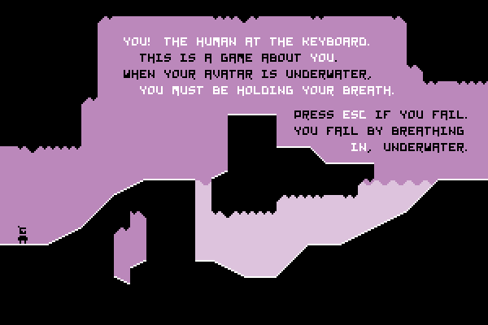

Introdução ao game design
Regras
Um jogo é uma experiência criada por regras. (…) Um jogo não pode existir sem um ou mais jogadores: alguém tem que interagir com as regras para que a experiência aconteça.
Um jogo é um diálogo entre jogadores e o jogo, e as regras que criamos são o vocabulário com o qual essa conversa acontece.
Anna Anthropy, Rise of the videogame zinesters.
As regras de um jogo têm de ser capazes de se desenvolverem, como um personagem em uma história. Novas formas de interagir com uma regra e suas relações com outras regras são esse desenvolvimento.
Temos de evitar regras soltas, desconectadas ou isoladas do resto do jogo. Outro aspecto importante é a necessidade de explicar as regras ao jogador da forma mais clara e menos intrusiva possível, e por isso podemos usar uma série de técnicas, entre elas se destaca o uso de cenas, contextos e objetos adequados.

Verbos
Verbos são um tipo de regra; são as regras mais importantes de um jogo. Um “verbo” seria qualquer regra que dá ao jogador a liberdade de agir dentro das regras do jogo. Qualquer regra que deixa o jogador mudar o estado do jogo. Qualquer regra que permite fazer algo. (…)
O papel do game design é criar as regras que dão forma à experiência do jogador, suas escolhas, sua performance. Regras são como nos comunicamos, e verbos são as regras que permitem ao jogador nos responder.
Anna Anthropy, Rise of the videogame zinesters.
Objetos
São um outro tipo de regra, que define os objetos (e sujeitos) das sentenças definidas pelas regras. O objetivo é escolher objetos que permitam relações interessantes com os verbos e outros objetos do jogo. Para ficar mais concreto, olhe os exemplos abaixo:
- “Somente o goleiro pode agarrar a bola com as mãos”
- “O nível de proteção do personagem é a soma de todos as partes de sua armadura mais efeitos mágicos“
- “O avestruz voador mata o pterodáctilo apenas se tocá-lo diretamente no focinho“
Joust no Atari 2600
Exercício em sala
Usando os conceitos acima, vamos, em grupos, analisar os três jogos abaixo.
- Pega-pega
- Pac-man
- Xadrez
Referências
- ANTHROPY, A.; CLARK, N. A Game Design Vocabulary: Exploring the Foundational Principles Behind Good Game Design. 1 edition ed. Indianapolis, IN: Addison-Wesley Professional, 2014.